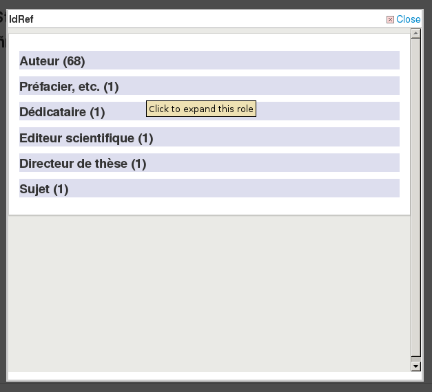

Web services
Get there: More > Administration > Global system preferences > Web services
General
AccessControlAllowOrigin
Asks: Set the Access-Control-Allow-Origin header to ___
Description:
This is the header used for OPAC reports SVC routes.
ILS-DI
ILS-DI
Default: Disable
Asks: ___ ILS-DI services for OPAC users
Values:
Disable
Enable
IdRef
IdRef
Default: Disable
Asks: ___ the IdRef webservice from the OPAC detail page. IdRef allows to request authorities from the Sudoc database.
Values:
Disable
Enable
Description:
IdRef is a French service for Sudoc autorities. Using the Sudoc database, it allows to request / modify / add authorities. If a record comes from the Sudoc (so 009 is filled with an integer), at the OPAC you will see “Author: Idref” if a 7..$3 (unimarc author) if filled with a ppn. On clicking on the Idref link, a popup will display.

The Idref webservice is requested and all records (by roles) for this author will be displayed

There is 1 line / record and 2 links at the end. 1 will request Koha (cgi-bin/koha/opac-search.pl?q=ident:003381862), the other one will redirect to the sudoc page (http://www.sudoc.fr/003381862).
Important
Please note that this feature is available only for libraries using UNIMARC.
Note
The French Sudoc database should not be confused with the US Superintendent of Documents (SuDocs) Classification Scheme.
Mana KB
Mana
Asks: ___ submissions to Mana KB.
Default: No, let me think about it
Values:
Disable
Enable
No, let me think about it
Description:
This preference reflects the choice made in the Mana KB configuration in the administration module.
ManaToken
Asks: Security token used to authenticate on Mana KB: ___
Default: empty
Description:
This preference will be automatically populated with your unique Mana Token when you register for one on the Mana KB configuration in the administration module.
The Mana Token is unique and associated with your Koha installation. It is used by Koha to log onto the Mana KB server and prevents intrusions on said server.
OAI-PMH
OAI-PMH
Default: Disable
Asks: ___ Koha’s OAI-PMH server.
Values:
Disable
Enable
Description:
Once enabled you can visit http://YOURKOHACATALOG/cgi-bin/koha/oai.pl to see your file. For the Open Archives Initiative-Protocol for Metadata Harvesting (OAI-PMH) there are two groups of ‘participants’: Data Providers and Service Providers. Data Providers (open archives, repositories) provide free access to metadata, and may, but do not necessarily, offer free access to full texts or other resources. OAI-PMH provides an easy to implement, low barrier solution for Data Providers. Service Providers use the OAI interfaces of the Data Providers to harvest and store metadata. Note that this means that there are no live search requests to the Data Providers; rather, services are based on the harvested data via OAI-PMH. Koha at present can only act as a Data Provider. It can not harvest from other repositories. The biggest stumbling block to having Koha harvest from other repositories is that MARC is the only metadata format that Koha indexes natively. Visit http://www.oaforum.org/tutorial/english/page3.htm for diagrams of how OAI-PMH works.
Learn more about OAI-PMH at: http://www.openarchives.org/pmh/
OAI-PMH:archiveID
Default: KOHA-OAI-TEST
Asks: Identify records at this site with the prefix ___ :
OAI-PMH:AutoUpdateSets
Default: Disable
Asks: ___ automatic update of OAI-PMH sets when a bibliographic record is created or updated.
Values:
Disable
Enable
OAI-PMH:AutoUpdateSetsEmbedItemData
Default: Disable
Asks: ___ embedding of item data when automatically updating OAI-PMH sets. NOTE: This needs OAI-PMH:AutoUpdateSets system preference to be enabled.
Values:
Disable
Enable
OAI-PMH:ConfFile
If this preference is left empty, Koha’s OAI Server operates in normal mode, otherwise it operates in extended mode. In extended mode, it’s possible to parameter other formats than marcxml or Dublin Core. OAI-PMH:ConfFile specify a YAML configuration file which list available metadata formats and XSL file used to create them from marcxml records.
For more information, see the sample conf file section.
OAI-PMH:DeletedRecord
Default: will never be emptied or truncated (persistent)
Asks: Koha’s deletedbiblio table ___
Values:
will never have any data in it (no)
will never be emptied or truncated (persistent)
might be emptied or truncated at some point (transient)
OAI-PMH:MaxCount
Default: 50
Asks: Only return ___ records at a time in response to a ListRecords or ListIdentifiers query.
Description:
This is the maximum number of records that would be returned based on ListRecord or ListIdentifier queries from harvesters. ListRecords harvest the entire records while the ListIdentifier is an abbreviated form of ListRecords, retrieving only headers rather than records.
REST API
RESTBasicAuth
Asks: ___ Basic authentication for the REST API.
Default: Disable
Values:
Disable
Enable
Description:
If enabled, Basic authentication is enabled for the REST API.
RESTdefaultPageSize
Asks: Set the default number of results returned by the REST API endpoints to ___ per page.
Default: 20
Description:
This preference lets you choose the number of endpoint results per page
RESTOAuth2ClientCredentials
Asks: ___ the OAuth2 client credentials grant for the REST API.
Default: Disable
Values:
Disable
Enable
Description:
If enabled, the OAuth2 client credentials flow is enabled for the REST API.
Note
Requires Net::OAuth2::AuthorizationServer installed.
Important
This system preference is experimental.
RESTPublicAnonymousRequests
Asks: ___ anonymous access to public routes (that don’t require authenticated access)
Default: Enable
Values:
Disable
Enable
Description:
If enabled, the API will allow anonymous access to public routes that don’t require authenticated access.
RESTPublicAPI
Asks: ___ the /public namespace of the API.
Default: Enable
Values:
Disable
Enable
Description:
If enabled, the REST API will expose the /public endpoints.
Reporting
SvcMaxReportRows
Default: 10
Asks: Only return ___ rows of a report requested via the reports web service.
Description:
This value will be used to limit the number of results returned by public reports.